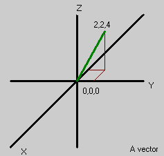
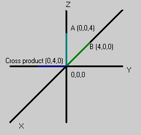

Vector
Foundations
Vector vs. Scalar
Many things like temperature, mass, etc. can be measured with only a number and some units, for example a kettle might contain water at 100 degrees Celsius. These are known as scalar quantities. They have no notion of direction.
Vectors, however have an idea of direction. In physics, Forces and Velocities are vector quantities. Taking velocity as an example. If we say that a car is going 70 km/hour, this does not tell us where it will be in one hour's time because we have not specified the direction that it is going. However, we could describe:
- the magnitude of the velocity (70km/hour)
- a compass heading to specify the direction (say 30 degrees from North)
- a number giving the vertical angle with respect to the Earth's surface (say 0 degrees)
The combination of these quantities define a vector for the car.
Components
A useful way to view a vector is as a sum of components. After our car has driven for an hour, it is 70Km away at a bearing of 30 degrees. Alternatively, we can say that it is 60.6km north and 35km east of its point of origin. We call these two numbers components of the vector. By representing vectors as components like this, it becomes much easier to perform operations like adding vectors together.
Coordinate Representation
On a two-dimensional plane, any point (x,y) can be represented as a vector. Graphically, we often represent such a vector by drawing an arrow from the origin to the point, with the tip of the arrow resting at the point.
The situation for three-dimensional vectors is similar, with an ordered triplet (x,y,z) being represented by an arrow from the origin to the corresponding point in three-dimensional space. In vector language, this is described as (ux , uy , uz) to make it clear that the three numbers belong to the vector u. This looks exactly the same as the coordinates for a point. The only difference is the way we think about them.
You may also see vectors expressed in the form ai + bj + ck. i, j, and k are unit vectors: vectors of length 1 that point along the x,y,z coordinates axes respectively. In maths, { i, j, k } is a basis for the space because any vector can be written as a combination of them. They represent the unit vectors along three perpendicular axes, and a, b, and c are the "lengths" of the vector along the respective axis. Vectors are extremely powerful. they can represent:
 |
![[vector2d]](images/vector2d.gif) The 2d vector u with its components ux and uy |
UnrealScript vectors
Vectors in UnrealScript always consist of three components, as they are usually used for working in the 3-d game world. For clarity, this page uses two-dimensional vectors, but the principles are exactly the same for three dimensions.
Unrealscript does not distinguish between a velocity vector, or a position vector, or any other type of vector. To the Engine, a vector is simply a collection of three float values that can be handed around as a single data item and can be operated on with vector operators (see below).
Note: Be careful when replicating vectors because the vector struct is compressed before it gets replicated. The vector components are converted to 16bit signed integers in UT (6 bytes per vector) and 21bit signed integers in UT2003/4 (8 bytes per vecctor with one bit unused). Fractional values are truncated during float→int conversion and values exceeding the limited bit range wrap around, so e.g. 1703954.25 may become -393198.00 in UT2004. However, these values already come close to the precision limit of the float data type (1703954.25 actually only has 2 bits left for the part behind the decimal dot!), so you probably won't be using them. Still keep this in mind when replicating vectors.
Units
When working with vectors, as with scalars, it's important to match units. Just as you can't add 5 degrees celsius to 30 degrees fahrenheit and end up with 35 degrees fahrsius, you can't add a vector expressed in meters per second to one expressed in km per hour and expect a sensible result. Unreal has its own units of distance, UnrealUnits? (UU), and from this we derive Velocities are in UU/sec and Accelerations are in UU/sec2.
Position += Velocity * time is the same as m += m / sec * sec
which evaluates to:
m += m
Thus, this makes sense. Here is what doesn't make sense:
Position += Velocity is the same as m += m / sec which evaluates to:
m += m /sec
Units don't match, so it doesn't make sense.
Recipes
Vector Length (magnitude)
The magnitude of a vector can be calculated using an extension of Euclid's rule for a right-angled triangle: Square each component of the vector (however many you have) and add them together, then take the square root of the result.
e.g. If I have a 2 dimensional vector 3i + 4j, the length of that vector can be calculated as
√( 32 + 42 ) = 5
The magnitude of a vector is written ||u||. The corresponding UnrealScript function is VSize(u) (vector size).
Dot Product
UnrealScript: u dot v
Maths: u · v
The dot product of two vectors is a scalar, ie a number. This is given by one of the following formulae:
- (ux * vx) + (uy * vy) + (uz * vz)
- ||u|| * ||v|| * cos(theta) – where theta is the angle between the vectors (In UnrealScript this would be VSize(u) * VSize(v) * Cos(theta))
If the dot product is zero, then the vectors are perpendicular (or at least one of them has zero length).
Further reading:  Dot product
Dot product
Adding Vectors
UnrealScript: u + v
Maths: u + v
The sum of two vectors is easiest in component form. The sum of u and v is the vector (ux+vx, uy+vy, uz+vz). It can be visualized as drawing one vector then drawing the second vector starting at the head of the first vector.
Still to cover:
- multiplying a vector by a number/inverting vectors
- normalized vectors
- What can cross product and dot product be used for?
- How can vectors be used in UnrealScript? (maybe just a link)
Vector operators and functions
The Operators page details the operators than can be used with a Vector. It should also be noted that some Rotator operators (namely << and >>) can be used to rotate a vector.
The following vector related Global Functions are defined in the Object class:
- float VSize (vector A) [static]
- Returns the length of the vector, ||A||.
- vector Normal (vector A) [static]
- Returns a vector with the same direction and a length of 1.
- Invert (out vector X, out vector Y, out vector Z)
- vector VRand ( ) [static]
- Returns a vector with random direction and a length of 1.
- vector MirrorVectorByNormal (vector Vect, vector Normal) [static]
- Mirrors a vector about a specified normal vector.
Think of a projectile p with a certain speed vector that hits a wall with a certain normal vector HitNormal and gets reflected without any damping. The projectile's new speed is what you get from MirrorVectorByNormal(p.Velocity, HitNormal). This can also be calculated through:
Vect - (Vect dot Normal(HitNormal)) * Normal(HitNormal) (this is used e.g. by the Ripper blades)
See UnrealScript Vector Maths for how to use these.
Example on useage:
event SeePlayer(Pawn Seen) {//Seeplayer seems to do wierd with FOV, always sees 180 DEG. if (Normal(Seen.Location - Pawn.Location) DOT Normal(Vector(Pawn.Rotation)) > 0.7 ) { SeenPlayer(Seen); } } function SeenPlayer(Pawn Seen);
I created this in a Controller, because the normal SeePlayer had a to width FOV for some reason, the 0.7 is calculated by cos(45) 45 in degrees (or cos(PI/4) in radians)
It's the only use of dot product that I have at the moment.
Foxpaw: The dot product can be used (and I think that is its primary use) to find the angle between them. When we learned above vectors in school we didn't use any symbols like the ones shown above... it might be helpful to relate this to more common mathematical expressions.
Mychaeel: More important than for determining an angle between two vectors is translating a given vector (location, direction, or whatever) to any given rotated coordinate system by simply multiplying the input vector with each of the normals pointing along the rotated axes to get the respective rotated coordinate values. That means if you have a rotated system (like an Actor's local coordinate system) and a whole batch of vectors to translate, you only have to perform the expensive coordinate rotation once on the normals and rotate any given vector into that system by evaluating three simple dot products.
Daid303: I finaly found a Dot product in some of the origional code. It's use in the PlayerPawn code. In ServerMove().
LocDiff = Location - ClientLoc; ClientErr = LocDiff Dot LocDiff;
But i'm kinda clueless what value the ClientErr will have....
Wormbo: Uhm, isn't (LocDiff Dot LocDiff) == Square(VSize(LocDiff)) ?
Daid303: So basicly they could have used VSize(LocDiff).... because they only compair it with a value afterwarts. To see if the new server location wouldn't be to far away from the previeus location. (if they are the server send a update to the client)
ThePoker: The reason they use a dot product there is that (X Dot X) is less expensive than Square(VSize(X)). While (X dot X) just squares and sums the components of X, Square(VSize(X)) does that first but then also takes the square root of the sum (in the VSize function) and then re-squares it.
Cross Product
UnrealScript: u cross v
Maths: u × v
The cross product of two vectors is another vector given by
||u|| * ||v|| * e * sin(theta) – where theta is the angle between the vectors
where e is a unit vector that is perpendicular to both u and v. In mathematics, ( u , v, e ) are taken to form a right-hand set. Because the Unreal world uses left-handed co-ordinates (see Handedness for definition and pictures), ( u , v, e ) is a left-handed set. This means that
[1,0,0] cross [0,1,0] = [0,0,1]
The cross product is not commutative:
u cross v != v cross u u cross v == -(v cross u)
Further/better reading: Cross product

Foxpaw: The short and the long of this is that the cross product of a pair of vectors is a vector perpindicular to both source vectors.. but not necessarily the only vector perpindicular to those two vectors. I think the above description is kind of confusing.
Mychaeel: Save for its length (positive or negative, and clearly defined for the cross product), there is only one single vector that's perpendicular to any two non-parallel vectors.
Daid303: I finaly start to understand the cross product, I think it's something like this:
The u and v make togethere 1 plane, on that place you can 'place' a vector, that's the cross product. The Cross product explains it quite well.
Mathematical Properties of Vectors
The following is for the mathematically inclined. Many of the following statements might seem obvious to the casual reader, but keep in mind that just the fact that you know something holds true for regular numbers (scalars) doesn't imply that it's also true for vectors.
- they can be added to each other to give another vector:
u + v
- addition of vectors is commutative and associative:
u + v = u + v u + (v + w) = (u + v) + w
- there is an additive identity, the zero vector:
u + 0 = u
- every vector has an inverse vector written -u such that
u + ( -u ) = 0 – or, for short: u - u = 0
- they can be multiplied by a scalar to give a new vector:
α * u
- scalar multiplication is associative and doubly distributive.
- the usual scalar 1 leaves vectors unchanged:
1 * u = u
In abstract maths, many more sets of objects satisfy these properties (for example, real numbers are a vector space over themselves, the complexes are a vector space over the reals, real functions are a vector space over the reals, and so on).
Related Topics
- Variables with Vectors
- Rotator
- Quaternion
- UnrealScript Vector Maths
- Vector
- Chimeric's Vector Primer
- [Vect's Vectors in UT]
Further Reading
Discussion
Sweavo: It's a mistake to try to teach the theory of vectors here, we can only do a worse job than mathworld or wikipedia or high school math books. The more explaining that goes on these pages, the harder it is to understand what the page is driving at. If more explanation is felt needed, I suggest linking to sites in Further Reading that give the info. What I do think belongs here is what you can do with them with unrealscript (like the nice ability to rotate a vector) and maybe a few recipes of what you can do with them in the game, like adding momentum to things in Karma.
shadoxx: I disagree. This page has been very useful for helping me understand vectors. I am a high school student, and I've learned more here than I have through the stupid textbooks they give us.